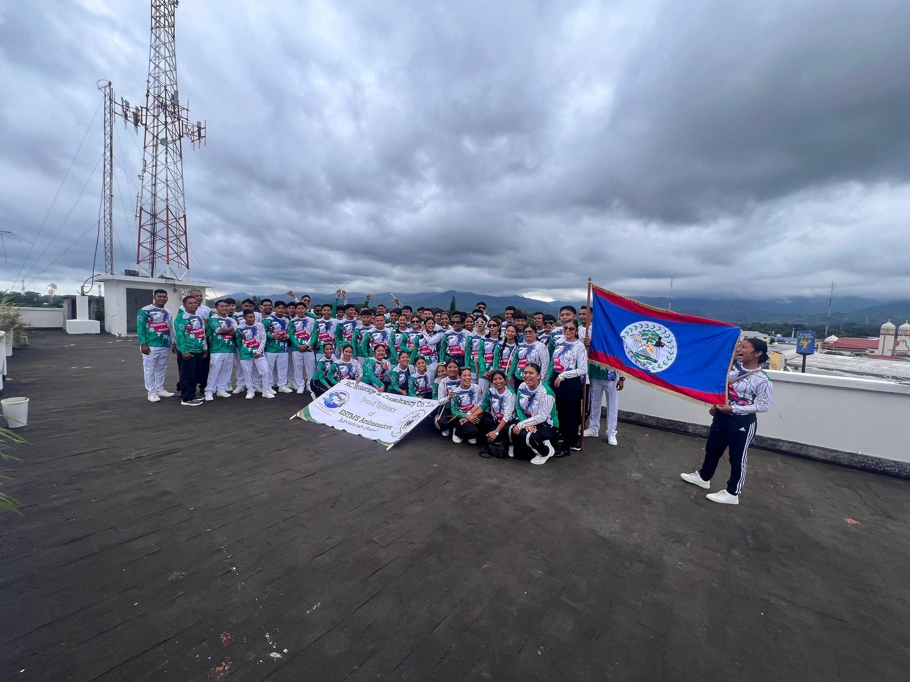
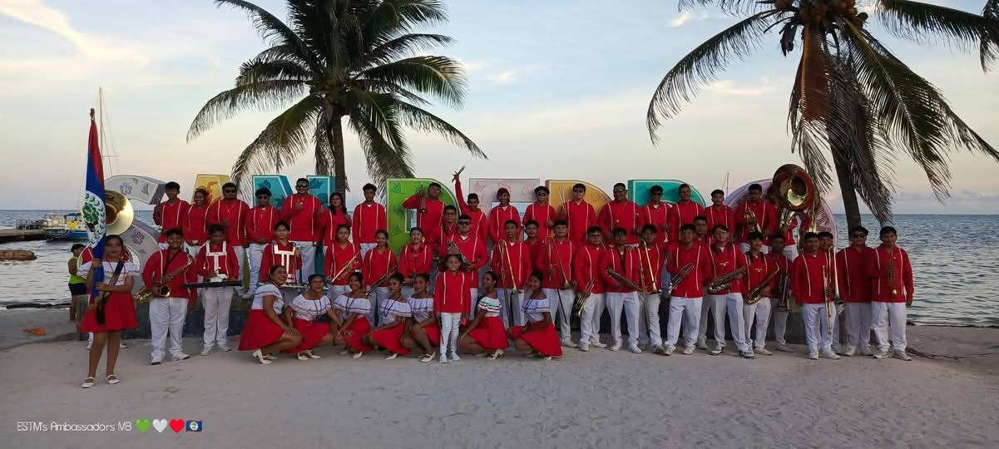
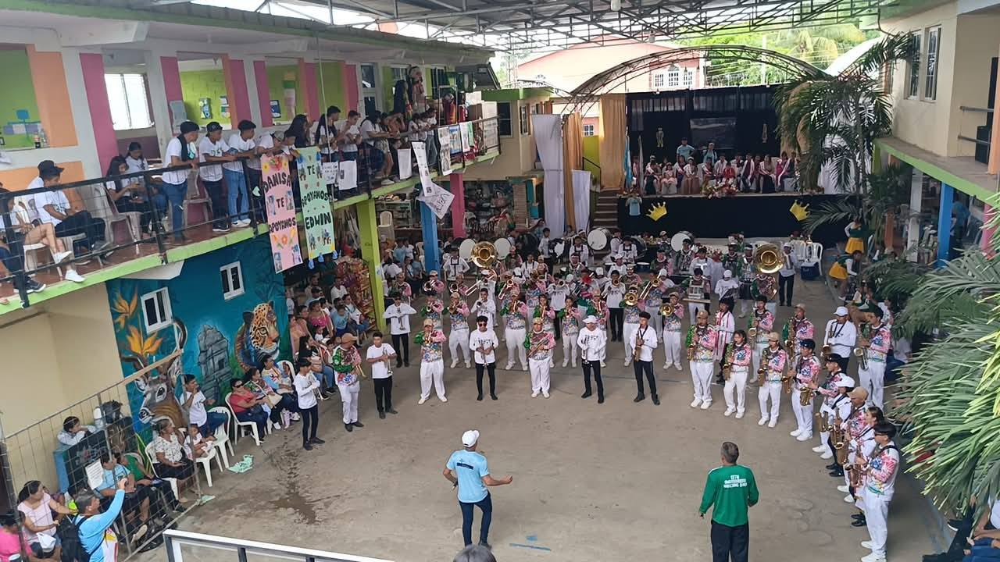
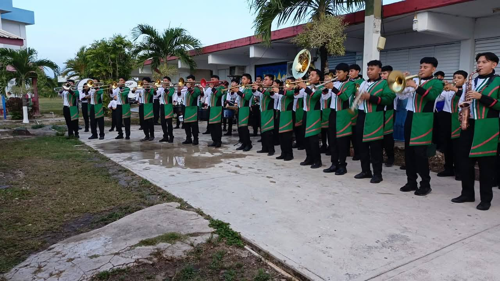
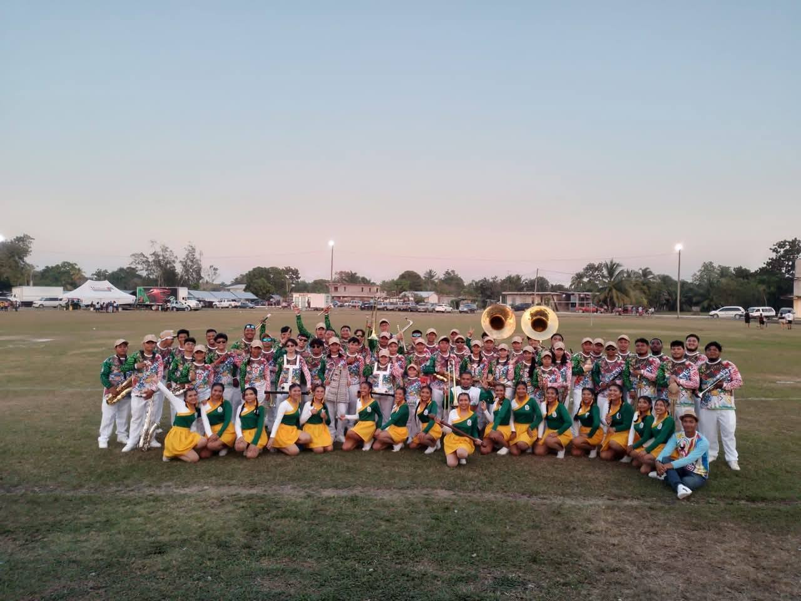
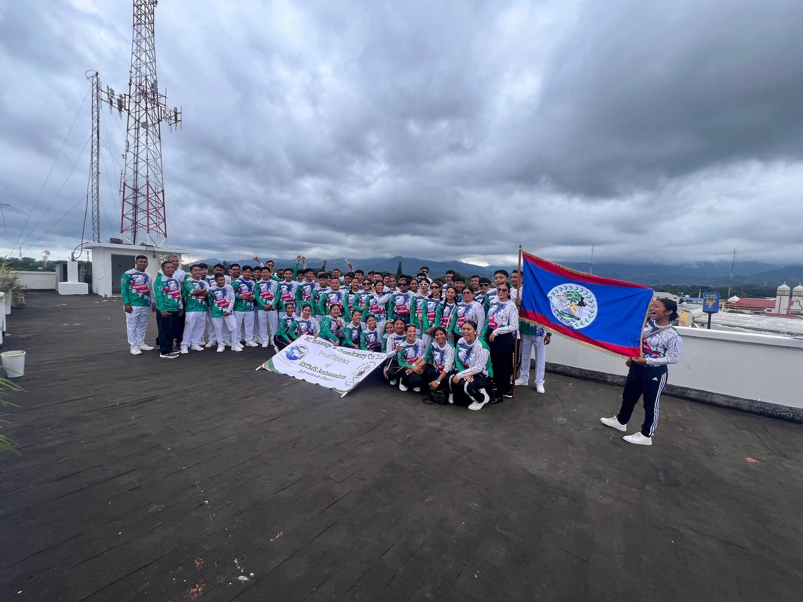
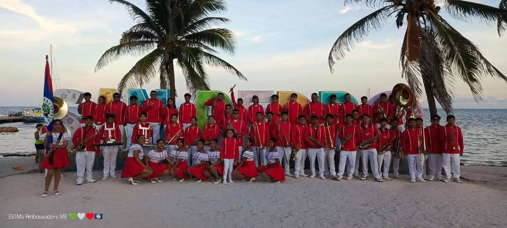
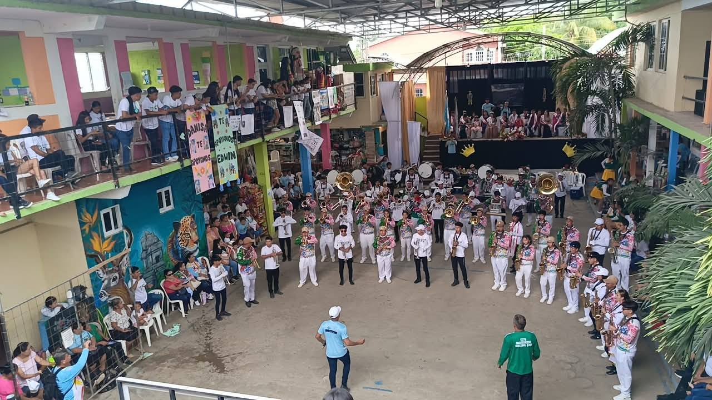
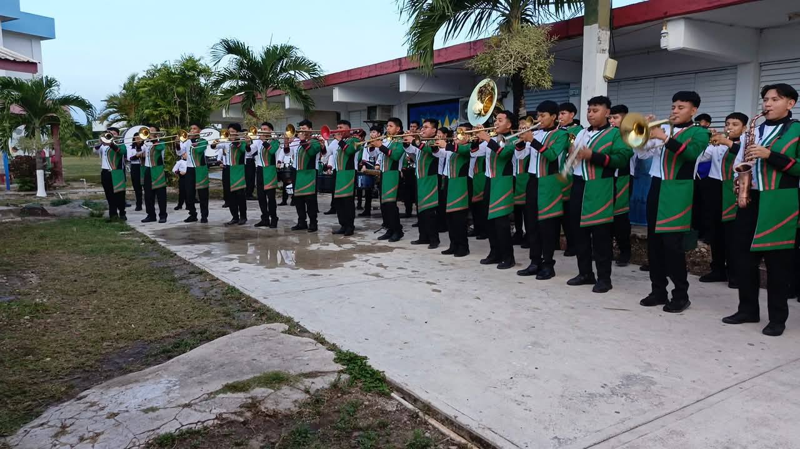
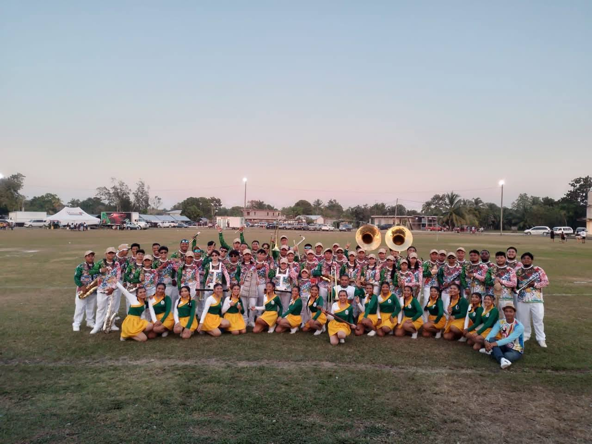

At the beginning of the year 2000, in the district of Corozal, Belize, under the leadership of Director Carey McCalla, the Drum Corps of Escuela Secundaria Técnica México (ESTM) was founded. This small band has proudly represented the school, a rural public institution, in numerous parades and community events, particularly excelling in local carnival competitions during the September celebrations.
In 2012, under the continued visionary leadership of Carey McCalla, the drum corps evolved into a full marching band. Their first participation in Belize’s Bandfest was in an exhibition capacity, without competing. By 2017, they secured third place in the competition, and in 2018, they received recognition as the band with the most progress. In 2023, after a pause caused by the COVID-19 pandemic, the band won first place in Belize’s Bandfest.
At that time, both Director Carey McCalla and Director Denzel Omir Charley worked together in preparing the band. In June 2023, the band suffered the loss of its founding director, Mr. Carey McCalla, a musical legend whose legacy lives on through the sounds and performances of ESTM’s “Ambassadors.” Every time the band marches, they honor his memory by carrying forward the rhythm, harmony, and unity that he helped to build.
Currently, Director Denzel Omir Charley leads the Ambassadors marching band, which consists of 67 musicians and dancers, including students and alumni of Escuela Secundaria Técnica México. AMB has had the honor of participating in parades and performances in both Chetumal, Quintana Roo, Mexico, and Melchor de Mencos, Guatemala. Our goal is to be true ambassadors of the marching band, representing Belize at both national and international levels. We work as a team, with a strong sense of community, to create performances that blend cultural, Latin, and traditional marching band music. We aspire to continue growing, learning from the feedback of judges and fellow musicians.